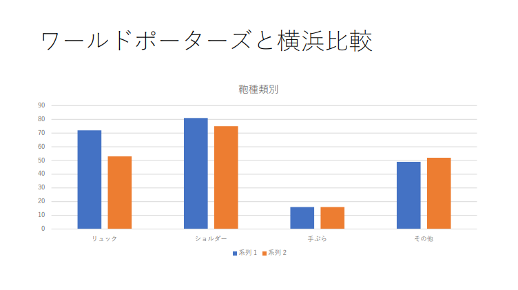

1.テーマ
カバン
2. 観察場所、方法
MMC~横浜駅（日産ギャラリー、そごう経由）の動画撮影による移動観察ワールドポーターズでの定点観察
3. 観察の焦点
カバンの種類（リュック、ショルダー、手ぶら、その他）※片方の肩にかけているものをショルダーとしている。
（例）トートバッグ
肩にかけている→ショルダー 肘や手でもっている→その他
4. 観察の結果
| リュック | ショルダー | 手ぶら | その他 | |
|---|---|---|---|---|
| ワールドポーターズ（定点） | 72 | 81 | 16 | 49 |
| MMC～横浜駅（移動） | 53 | 75 | 16 | 52 |
5.観察の動画
MMC～横浜駅の移動観察動画6. 結果の詳細